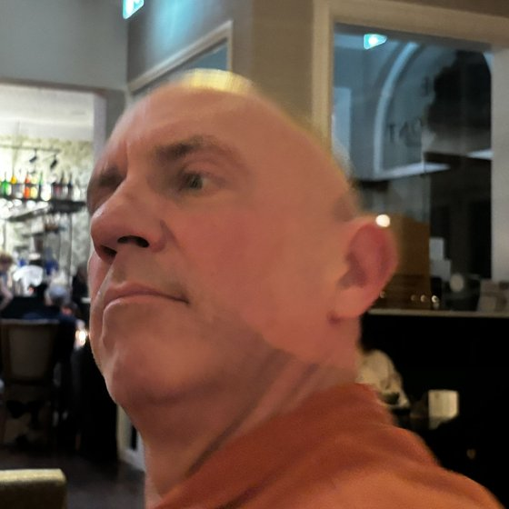

Lengthened partials beat full reps
In a leg-press calf raise study, partials in the bottom, stretched half produced roughly twice the gastrocnemius growth of full-range reps. Partials in the top, shortened half produced the least.
Est. under the green lamps
The Calf Guru has spent years looking past the noise and up at the science. He'll take you from chicken legs to diamond calves with long-muscle-length training, honest volume, and no bouncing.

Meet the Guru
You've seen the look: a sideways glance, a slight lift of the chin, a calm judgement. That's the Guru clocking another man who skipped calf day. He doesn't shout and he doesn't sell supplements. He just knows the calves are the most neglected and the most honest muscle on a man's body.
“Anyone can do a hundred bouncy calf raises. The question is whether you'll sit in the stretch long enough for it to hurt.”
The Calf Guru
Know thy calf
The triceps surae is made of the gastrocnemius, which crosses the knee, and the soleus, which doesn't. Knee angle decides which one does the work.
The evidence locker
Calf research has picked up in the last few years, and it keeps pointing the same way: train the calves long, hard and often enough.
In a leg-press calf raise study, partials in the bottom, stretched half produced roughly twice the gastrocnemius growth of full-range reps. Partials in the top, shortened half produced the least.
Over 10 weeks, legs that did extra lengthened partials after reaching failure grew +9.6% in the medial gastrocnemius, versus +6.7% for legs that stopped at failure.
In resistance-trained participants doing four sets twice a week for 8 weeks, lengthened partials still outgrew post-failure partials. The stretch is what matters.
Comparing 6, 9 and 12 weekly sets of calf raises, the 12-set group grew the most. Everyone grew, but the higher dose gave the best results.
Whole-calf growth was greater after standing calf raises than seated ones. Standing raises stretch the gastrocnemius across the knee as well as the ankle.
These studies are small and short, and several used untrained volunteers. The direction of the evidence is clear, but the exact numbers aren't settled. Train hard and be patient.
The Guru's tempo
Most men bounce off their Achilles tendon like a pogo stick, and the tendon does the work instead of the muscle. Press start and follow the Guru's count for one set.
The 12-week protocol
Personal prescription
Pick your starting point and the Guru will write your week.
Sins of the shin
Bouncing out of the bottom lets the Achilles tendon throw the weight for you. Pause for two seconds and kill the stretch reflex.
Piling on weight and moving it two inches. Drop the load and earn the full stretch.
Three sloppy sets at the end of leg day. Train calves first, or on their own day.
The burn means you're getting close. Finish with partials in the stretch until you can't move.
Questions for the Guru
Genetics decide your ceiling and how high your muscle belly sits. They don't decide whether you've reached that ceiling. Almost nobody has. Studies show untrained calves grow well within a few weeks when they're trained properly.
Two or three sessions a week works for most people. Aim for about 8–16 hard sets a week in total, and build up gradually. Calves recover fairly quickly, but your Achilles tendon needs time to adapt.
Both work if the sets are hard. The Guru suggests 8–15 controlled reps, then lengthened partials to failure. How far you go into the stretch matters more than the exact rep count.
Do both, but prioritise standing. A straight knee lets the gastrocnemius stretch. A bent knee mostly leaves the work to the soleus.
Studies measure growth after 6–10 weeks. You'll probably notice it in the mirror at around 3 months, and in shorts the following summer.
Sign up for the weekly Raise: one tip, one study and one calf-day challenge. No spam, no bouncing.